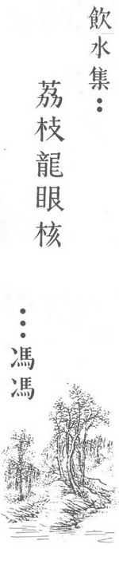

荔枝龙眼核
冯冯
记得儿时在广州听过一则流传很广的佛教小故事，大意说：
有一位目不识丁的贫穷老妇，佣工为生。来到一家新雇主宅中侍候一位少奶奶。那位女主人天天在静室内诵经念佛，叫老妇人侍候茶水上供。
老妇看见女主人念佛，心生羡慕，也很想学学念怫。但是不识字，不能读经；就恳求女主人教她。
“少奶奶，您也教教我念念佛、念念经吧，好叫我也修修来生。”
少奶说：“你又老，又愚蠢，又笨，又不认得字，叫我怎么教得了你呢？佛经都是很深奥的呀！连我也不懂呀！”
老妇说：“少奶奶好歹就教我几句，让我念念。”
少奶奶说：“念佛是那么容易随便的吗？得沐浴、 焚香，诚心才可以念的；不然是不灵的。像你这样子，又脏，又不恭敬，你念什么佛？”
老妇说：“少奶奶！您行行好，就教我一句罢。我就光会念一句观音菩萨，别的都不会；您就教我一句添着念吧。”
少奶奶给老妇缠不过，心生厌恶。就说：“佛经佛号那么多，你叫我教你哪一句？
“就教我听见您常念的那一句罢，南无什么的。”
少奶奶平时常念大悲咒，开头一句是“南无喝啰怛那哆啰夜耶”。她心想，就是教了你，你也学不来的。她就不耐烦地说：
“好吧，我教你这一句：‘南无荔枝龙眼核！’你去自家念个够吧，别再来烦我。”
老妇如获至宝。她不识字，也无智识；不知道巳被少奶奶所愚。从此她天天日日无时不诚心念着这一句：“观音菩萨，南无荔枝龙眼核”，她每天不知念上几千几万遍。
老妇有一个儿子，是个飘洋越海的水手。老妇心中惦念儿子，她日夜念着那句“南无荔枝龙眼核”，祈求菩萨保佑她儿子平安。
她十分虔诚祷念，她误以为那一句真的是佛号。她无时不祷念着“观音菩萨，南无荔枝龙眼核”。
后来，老妇的儿子在一次航海途中，遇到暴风雨，船沉了；全船的人都葬身波涛之中。他落在海中，载浮载沉，自忖必无生望。不料不知从何处飘来了一大批荔枝核和龙眼核，堆积成筏，把他托住，得免溺毙。
儿子被果核载着，在汪洋中飘流了多日，终于遇救，平安回到家中。
老妇起先听闻耗讯，只闻儿子与全船水手都葬身鱼腹。她正在哀恸，却见到儿子安然返来，不禁喜出望外。
“儿啊！”老妇哭道：都说你们全船水手都没了，你却又怎得归来？”
儿子说：“风浪险恶；自忖必死，却不知道何处飘来 一大批荔枝核和龙眼核，把儿身托住，得以不死。”
“什么？荔枝核和龙眼核？”
“是的，好大的一批，成座山似的—成座小岛一般，都是荔枝核和龙眼核；成千成万，从来没见过那么多。”
“这可真是菩萨保佑了！”老妇说：“儿呀！你可知，为娘日夜都念着佛呀！”
这则故事来源难以稽考。可能洐变自佛教的一些小经，也可能确有其事。广东盛产荔枝和桂圆，称桂圆为龙眼；这两种果子的果核都是轻易浮水的。不过那么大批的果核在海中聚在一起，很多人都认为难以置信。我也心想它不过是寓言而巳。
几年前我在南加州拉贡那海滩。偶然散步至荒僻海边悬崖下，看见怒涛澎湃，猛扑崖下，卷来大批海带在滩边，积聚成丘。海水中飘着浊黄的海带，密如森林，摇曳不停。煞是奇观。
当时心中忽然一动，不知怎么一来，忆及上面提及的小故事。心想，海带堆聚飘来巳是眼见的事实；但是荔枝核与桂圆核在海中堆聚恐怕不大可能吧？
故事的寓意很明显，心诚则灵。这是佛教的浅白小故事，劝化一般世人的。故事并无谈及高深佛理，但是它多么富于教育意义呢？世人并非个个都是上根，能够领悟高深佛理。可是，就是中根或钝根，只要至诚信佛念佛，也可以获得佛佑呀。甚至于念佛不够准确，也不要紧；最重要的还是诚心。当然，最好是到寺里去，向法师学习正确的念法。
我当时心中这样想着，眼睛仍然望着海中波涛。我看见外面波浪上面飘浮着一团一团的褐色小小东西──蠕蠕而动的，不知道是什么？它们引起我的好奇。
我伫立观察良久，仍然分辨不出它是什么？我走到水边，等待它们飘来；当它接近岸边之时，我才看得清楚；它们都是一些荔枝核！
我大吃—惊！不敢相信自己的眼睛。捞起几粒细看 ，一点也不锗，都是鸡心形的荔枝果核。那波浪中，一团团、一堆堆，恐怕也有几千粒这样的荔枝核，伴着垃圾杂物而至。
这些荔枝核从何而至？我百思不得解。从太平洋水流方向判断，它们可能是从东方热带地区飘来的。它们像是广东名种“桂味”荔枝，与墨西哥所产的不同。
我呆视这些荔枝核，久久不去，心中感动，莫非这也是佛的一种启示来释我心中之疑？佛力有许多不可思议；可能这也是一点不可思议的点化吧？
至少，我从今不敢再说：“那有那么多荔枝龙眼核会在海中聚成一团而飘浮？”
至于那一则小故事，传播既久，难免不无讹误出入；但那又有什么重要呢？
原载万佛城《金刚菩提海》第127期：1980年12月1日
转贴来源：万佛城《金刚菩提海》